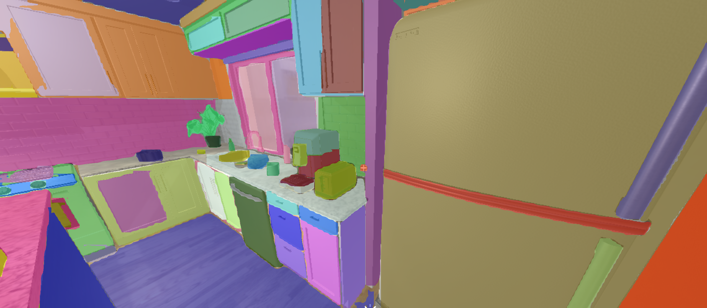

DAIRLab Research • UPenn • Current
C3: Consensus Complementarity Control
Contact-implicit MPC from the DAIRLab that plans through making and breaking contact. Lead developer and maintainer of the open-source reference implementation — full refactor, CI/CD, and the example suite behind the Push Anything paper.
View Project →Open Source
DAIRLab • UPenn
DAIRLab Infrastructure
Robotics drivers and tooling: UR arm driver, Robotiq gripper driver, SpaceMouse LCM bridge, Docker infrastructure, and more.
View Project →RoboRacer • ESE 6150 • UPenn
F1Tenth RoboRacer
10 progressive labs building a full autonomous racing stack — AEB, wall following, SLAM, MPC — culminating in a live race.
View Project →Learning & Control • MEAM 6230 • UPenn
Dual-Arm Stacking via Neural DS
100% task completion on dual-arm cube stacking using Lyapunov-stable neural dynamical systems with scripted IK for contact phases.
View Project →Physical Intelligence • ESE 6510 • UPenn
Drone Racing via Reinforcement Learning
PPO-trained quadrotor races through gates in NVIDIA Isaac Sim using only vision-based input.
View Project →
Computer Vision • ESE 5460 • UPenn
3D Scene Understanding with Concept Graphs
Open-vocabulary 3D mapping in AI2-Thor: FastSAM segmentation, CLIP embeddings, OctoMap fusion, and LLM-generated scene graphs.
View Project →Advanced Robotics • MEAM 6200 • UPenn
Autonomous VIO-based Quadcopter
Fully autonomous quadcopter flight driven by Visual Inertial Odometry — no ground-truth data required.
View Project →Control & Optimization in Robotics • MEAM 5170 • UPenn
3D MPC-Controlled Quadrotor
Balances an inverted pendulum on a flying quadrotor using MPC, Direct Collocation, and RRT*.
View Project →Intro to Robotics • MEAM 5200 • UPenn
Cube Stacking Competition
Autonomous robotic arm stacks cubes in order using inverse kinematics and computer vision.
View Project →Personal Project
Chess Bot
A 4-DOF robot arm navigating in configuration space with A* to play chess.
View Project →URECA Research • NTU
Digital Terpsitone
Reviving a 50-year-old non-contact instrument using a Kinect sensor and C# with multi-player support.
View Project →
Final Year Project • NTU
Image Recognition with CUDA C
GPU-accelerated convolution-based image recognition on Jetson hardware for real-time applications.
View Project →Multi-Disciplinary Project • NTU
Maze-Traversal Bot
An 8-person team project: an Arduino bot that autonomously traverses and maps an unknown maze.
View Project →